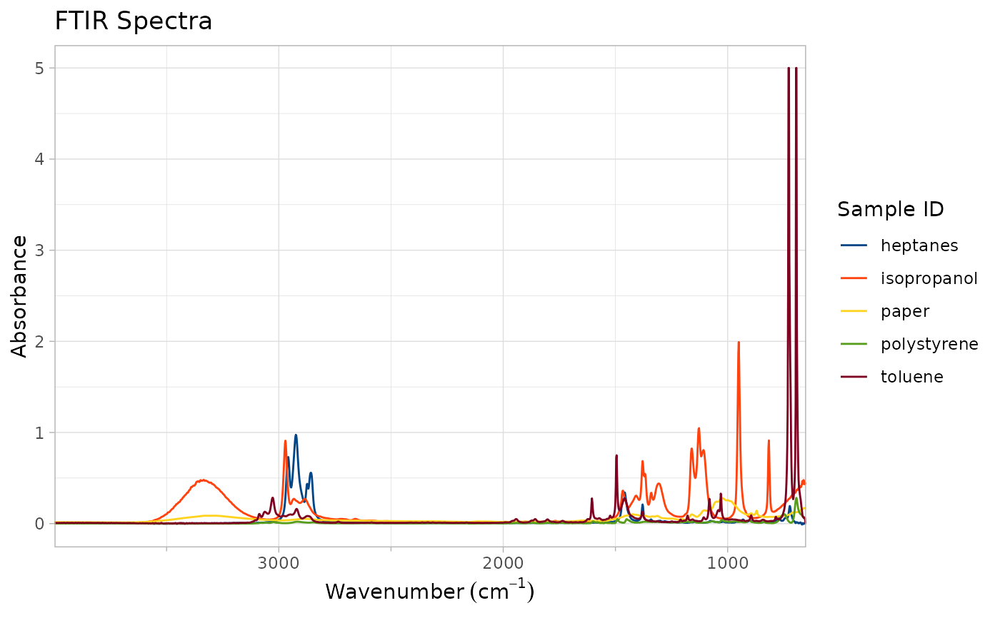

Produce a basic spectra overlay plot for all samples found in the FTIR dataset provided.
Produisez un tracé de base de superposition de spectres pour tous les échantillons trouvés dans l'ensemble de données IRTF fourni.
plot_ftir(
ftir,
plot_title = "FTIR Spectra",
legend_title = "Sample ID",
lang = NA
)A data.frame in long format with columns `sample_id`, `wavenumber`, and `absorbance`. The `absorbance` column may be replaced by a `transmittance` column for transmittance plots. The code determines the correct y axis units and labels the plot/adjusts the margins appropriately.
Un data.frame au format long avec les colonnes `sample_id`, `wavenumber`, et `absorbance`. La colonne `absorbance` peut être remplacée par une colonne `transmittance` pour les tracés de transmission. Le code détermine les unités correctes de l'axe y et étiquette le tracé/ajuste les marges de manière appropriée.
Title for plot. Defaults to "FTIR Spectra". Vector length 2 uses second element as subtitle. Titre du tracé. Par défaut "FTIR Spectra". Un vecteur de longueur 2 utilise le deuxième élément comme sous-titre.
Title for legend. Defaults to "Sample ID". Titre de la légende. Par défaut "Sample ID".
Optional language argument: `fr`/`french`/`francais`/`français` for French; `en`/`english`/`anglais` for English; `NA` uses default. Argument optionnel pour la langue : `fr`/`french`/`francais`/`français` pour le français ; `en`/`english`/`anglais` pour l'anglais ; `NA` utilise la valeur par défaut.
a ggplot object containing a FTIR spectral plot. The plot and legend titles are as provided, with each sample provided a different default color. Because this is a ggplot object, any other ggplot modifiers, layers, or changes can be applied to the returned object. Further manipulations can be performed by this package. Peut également fournir `en`, `english` ou `anglais`.
un objet ggplot contenant un tracé spectral IRTF. Les titres de le tracé et de la légende sont tels que fournis, avec une couleur par défaut différente pour chaque échantillon. Puisqu'il s'agit d'un objet ggplot, tous les autres modificateurs, calques ou changements ggplot peuvent être appliqués à l'objet retourné. D'autres manipulations peuvent être effectuées par ce package.
if (requireNamespace("ggplot2", quietly = TRUE)) {
# Plot a basic FTIR Spectra overlay from the `sample_spectra` data set with default titles
plot_ftir(sample_spectra)
}
